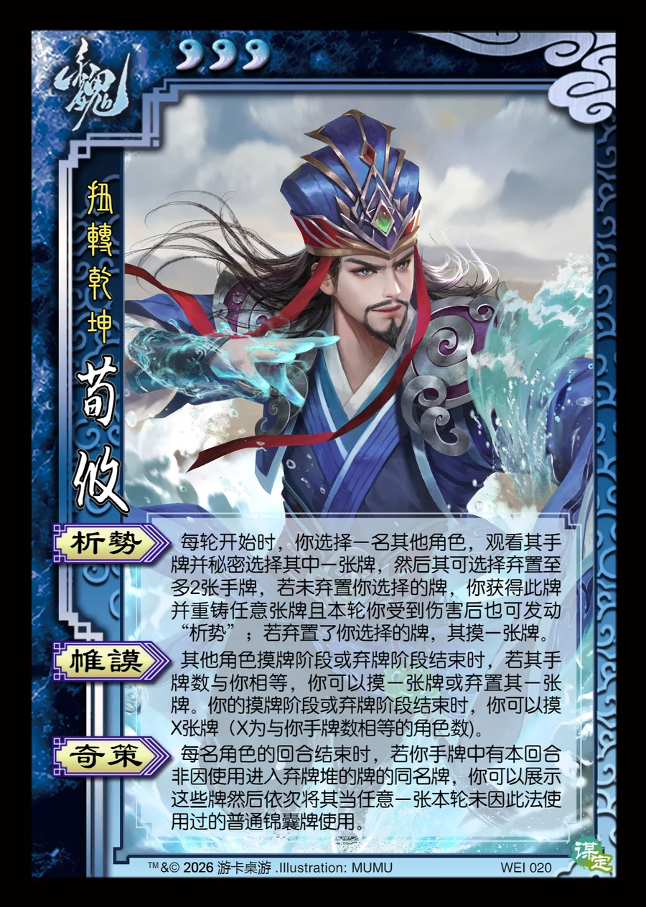

点击卡面查看大图
魏
谋荀攸
♥3扭转乾坤
析势
每轮开始时，你选择一名其他角色，观看其手牌并秘密选择其中一张牌，然后其可选择弃置至多2张手牌，若未弃置你选择的牌，你获得此牌并重铸任意张牌且本轮你受到伤害后也可发动“析势”；若弃置了你选择的牌，其摸一张牌。
帷謨
其他角色摸牌阶段或弃牌阶段结束时，若其手牌数与你相等，你可以摸一张牌或弃置其一张牌。你的摸牌阶段或弃牌阶段结束时，你可以摸X张牌（X为与你手牌数相等的角色数)。
奇策
每名角色的回合结束时，若你手牌中有本回合非因使用进入弃牌堆的牌的同名牌，你可以展示这些牌然后依次将其当任意一张本轮未因此法使用过的普通锦囊牌使用。